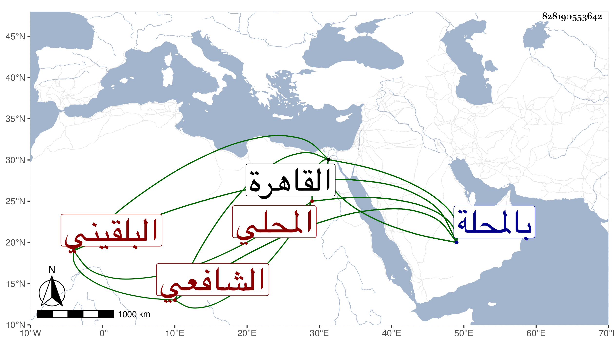

0902Sakhawi.DawLamic.ITO20230111-ara1.EIS1600.828190553642
Biography ID: 828190553642
216
محمد بن عبد الله بن محمد بن أحمد بن مظفر بن نصير بن صلح بن شهاب ابن عبد الحق الصدر بن الجمال بن الشمس البلقيني المحلي الشافعي ويعرف بابن شهاب ولد كما قال في رابع عشر ذي القعدة سنة ثمانين وسبعمائة بالمحلة وأنه قرأ بها القرآن على الفقيه حسين المغربي وصلى به والعمدة والرونق لابي حامد الاسفرايني والتبريزي كلاهما في الفقه والملحة وعرضها وتردد إلى القاهرة كثيرا وأقام بها زمانا وأخذ الفقه والنحو عن فقيهه حسين وكذا بحث في الفقه بالمحلة على الشمس بن أحمد وبالقاهرة على الابناسي وفي النحو بالقاهرة على الشهاب بن سيفاه المتجند والشمس ابن الجندى وبالمحلة على الشمس النشائي وقرأ على المحب الصائغ والسراج الاسواني شرح بديعية الحلي بالمحلة وولي عقد الانكحة بها وشهد في الحمايات وتكلموا في صدقه ولقيه ابن فهد والبقاعي فكتبا عنه ومن ذلك قوله
| لعبت بالشطرنج مع شادن | رمى بقلبي من سناه سهام |
| وجدت شامات على خده | فمت من وجدي به والسلام |
وزعم أنه عمل أرجوزة في النحو تنيف عن ثمانين بيتا وشيئا في علم الرمل وتسيير الفلك فالله أعلم . مات بالمحلة في ربيع الثاني سنة تسع وثلاثين عفا الله عنه .
